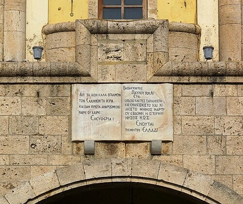
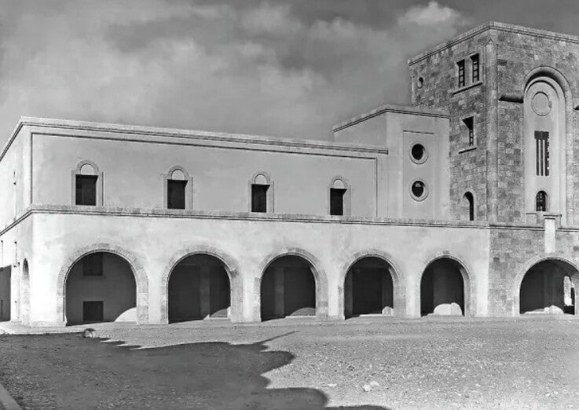

Casa del Fascio
Imposant Italiaans gebouw met toren en sprekerbalkon – ooit fascistisch hoofdkwartier, nu café-restaurant op het centrale plein.
Op het centrale plein
De Casa del Fascio is een groot, imposant gebouw op Eleftherias-plein (Piazza Orfeas) in het centrum van Kos-stad. Het werd gebouwd door de fascistische partij van Mussolini tijdens de Italiaanse bezetting van de Dodekanesos (1912–1947).
Na de aardbeving van 1933
Na de zware aardbeving van 1933 kregen de Italianen de kans om Kos en het plein opnieuw in te richten. In 1935 bouwden zij de Casa del Fascio als hoofdkwartier voor de fascistische partij.
Het gebouw heeft een hoge klokkentoren en een balkon erboven, en domineert één kant van het plein. De stijl is strak, modern en symmetrisch – typisch Italiaanse rationalistische architectuur uit die tijd.
Na de oorlog
Toen de Italianen weg waren en Kos weer Grieks werd, veranderde de functie. Vandaag zit er een café-restaurant in (onder meer Aegli). De buitenkant is nog steeds een duidelijk voorbeeld van de Italiaanse bouwstijl uit de jaren dertig.

Plaquette “gebroken boten”
Aan de voorkant hangt een plaquette met een gedicht over “gebroken boten”. Dat herinnert aan de bevrijding van Kos na de Tweede Wereldoorlog (rond 1945).
De “gebroken boten” staan symbool voor kapotte schepen, dromen en levens door de oorlog en de bezetting – en voor de hoop daarna.

HistorischBezoeken
De buitenkant kun je altijd bekijken vanaf Eleftherias-plein. Binnen is het een café-restaurant – open tijdens horeca-uren.